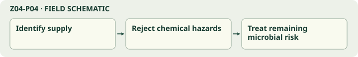

Z04-P04 · Water
Reject a contaminated source
Screen for chemical contamination before choosing microbial treatment.
When it applies · Selecting a water source after a spill, flood or uncertain local advisory.
Equipment · Known potable alternative and local advisory if available.

Actions
- Identify available safe water first. Check where runoff comes from and whether a local warning applies.[W01, W07, W09, ED]
- Reject sources suspected of fuel, toxic chemicals or radioactive contamination. Seek a known safe source and follow local instructions.[W01, W07]
- If only microbial contamination is suspected, select an appropriate microbial treatment and protect clean storage.[W02, W04, W06]
Verify · State which hazard the procedure handles and which hazards required rejecting the source.[ED]
Stop or change course · Clear appearance, lack of odor or successful boiling cannot override a suspected chemical hazard.[W01, W09]
Evidence and editorial notes
- W01 · CDC · How to Make Water Safe in an Emergency
- Water with fuel or toxic chemicals in it · Suspected fuel, toxic chemicals or radioactive contamination
Use a different safe supply. Standard boiling and microbial disinfection do not make this water safe.
Primary source · checked 2026-11-24 - W02 · CDC · How to Make Water Safe in an Emergency
- Boil > Steps for boiling water · Microbiologically suspect water with acceptable chemical source; portable heat and safe vessel
Clarify cloudy water first. Rolling boil for one minute; above 6,500 feet for three minutes. Cool and cover in sanitized containers.
Primary source · checked 2026-11-24 - W04 · CDC · Water Treatment Options When Hiking, Camping, or Traveling
- Water treatment methods > Filter and disinfect · Untreated backcountry water; suitable devices and directions
Filter capability varies. Filtering then disinfecting addresses gaps left by typical portable filters. Follow both manufacturers' directions.
Primary source · checked 2026-11-24 - W06 · CDC · How to Create an Emergency Water Supply
- How to store emergency water; Safe storage containers · Potable water intended for emergency storage
Prefer sealed commercial water or clean food-grade tight-closing containers. Avoid containers that held toxic chemicals.
Primary source · checked 2026-11-24 - W07 · CDC · Drinking Water Advisories: An Overview
- Boil water; Do not drink; Do not use · Public-water system advisories
The notice determines safe activities. Use another source for do-not-drink notices. Do not use tap water for any purpose under a do-not-use notice unless authorities direct otherwise.
Primary source · checked 2026-11-24 - W09 · CDC · Water Treatment Options When Hiking, Camping, or Traveling
- Overview and water treatment methods · Hiking or camping where no safe source is confirmed
Even clear water can contain germs. Assess the supply and carry safe water or an appropriate treatment method.
Primary source · checked 2026-11-24
Source lineage · B009 original and revision.